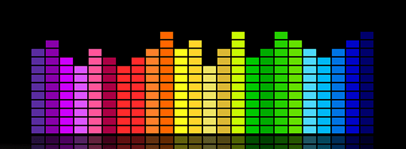
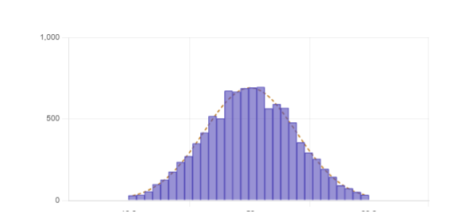
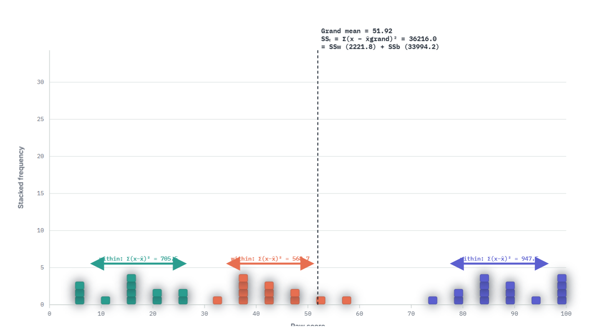
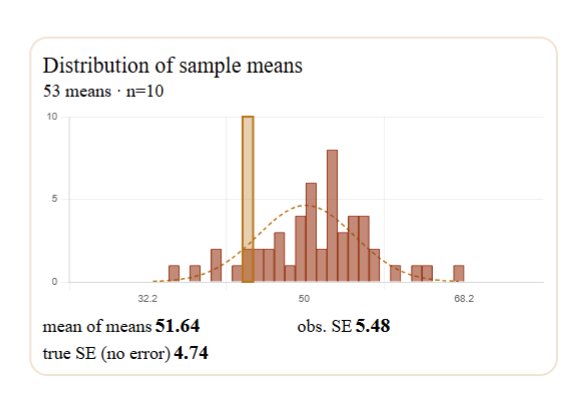

PSY 10B: Statistics for Psychology
Intro to stats for psychology
Useful tools for understanding stats concepts
Games
Navigation game for collecting data from ourselves to use in class. Test your spatial ability.
Interactive Tools

Watch animated step-by-step explanations of each part of the statistical testing process.

Explore distributions of sample means and see how sample means become normally distributed as sample size increases.
Test yourself with practice questions from all content areas in weeks 1 and 2. (AI generated, use at own risk).
Test yourself with practice research scenarios and carry out guided analyses from weeks 2, 3, and 4.

Visualize between-group and within-group variability and understand the F-ratio. See how an ANOVA table is created with visual references.

See how the distribution of sample means is affected by realistic, imperfect measurement.